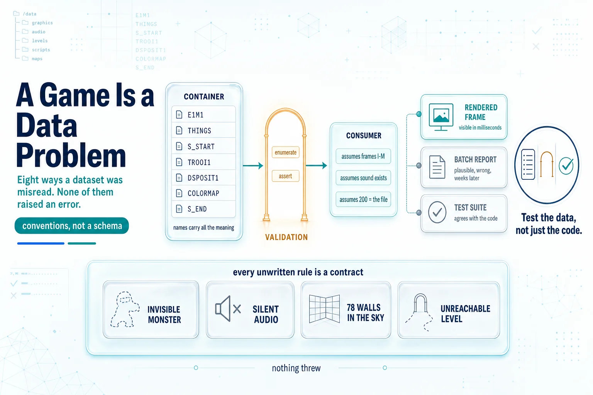

A Game Is a Data Problem: What Reimplementing an Engine Taught Me About Silent Contract Failure
By Alexander Chernov. First published on LinkedIn, 2026-08-23. Read the original.
Nobody files a game under data engineering. Games are graphics, physics and frame budgets — a rendering discipline, shelved next to shaders and GPUs. Data work lives somewhere else entirely, in warehouses and pipelines and schemas.
I spent several weeks rebuilding a 1993 game engine so that it runs in a browser, and came away convinced that shelving is wrong. The result is playable at AgentArena.ca, which is the world I am building as a controlled environment for assessing agentic behaviour and implementation. The rendering was the part I expected to be hard. It was not the part that consumed the effort, and it produced nothing worth writing down. Almost every difficult hour went into the data — and every one of those hours taught something that transfers directly to pipelines which have never drawn a pixel.

Why “from scratch” is the whole premise
Almost every version of this game that runs in a browser is the original 1993 C source compiled through Emscripten: the same engine, re-hosted. What I built is a reimplementation written from scratch against the file formats, sharing no code with the original.
That distinction is not about bragging rights. A transpiled port inherits thirty years of accumulated handling for every strange thing the data can do — the special cases are already in there, fixed long ago by someone else, invisible to whoever compiles it today. Writing the reader fresh means meeting every one of those assumptions yourself, in the order the data chooses to break them.
So I did not set out to study data quality. I got a controlled experiment in it, by removing thirty years of accumulated defences and then pointing a brand-new consumer at a real dataset.
Roughly 9,200 lines of engine code and 2,000 of frontend, 174 engine tests, running against Freedoom — the BSD-licensed open asset set. No original source, no commercial data.
The dataset has conventions where a declarative schema should be
The game ships its content in a single container file: a header, a directory of named entries, and a defined binary layout for each kind of entry — but no declarative schema describing the semantic relationships among them. This is not unstructured data. It is structured data whose most important contracts live outside the structure. The names carry all the meaning, and every rule is unwritten:
- An entry called
E1M1is a level — but only because it is a zero-length entry immediately followed by one calledTHINGS. Nothing declares this. You infer it from adjacency. - Entries beginning
DSare sounds. Entries between markers namedS_STARTandS_ENDare sprites. - A sprite’s animation frame and viewing angle are encoded in the last two characters of its name, so
TROOplus frameIplus rotation1becomesTROOI1. There is no index anywhere of which frames exist.
If you have ever consumed a partner’s CSV drop where the filename encodes the region and the date, or a bucket where _v2 in a key means the columns changed, you have met this dataset. It is enormously common — and it is not a legacy curiosity. It is what most real integrations look like before somebody writes the schema down.
Every one of those unwritten rules is a contract. And when a contract breaks, nothing throws.
Here is what that looks like from the other end — a real frame from the reimplementation, with each part of it traced back to the entry it was assembled from. There is no pixel on this screen that was not fetched by name.

Eight failures, and not one raised an error
This is the actual bug history of the project, not a constructed example:
| The assumption | The reality | What it looked like |
|---|---|---|
| The texture atlas needs the objects this level spawns | Which objects spawn depends on the difficulty | A shotgun you could hear, walk into and pick up — and never see |
A character’s death frames are named I–M | For several of them, they are not | An invisible monster — present, solid, undrawn |
The sound DSPOSIT1 exists | Not guaranteed across releases | Silence, indistinguishable from broken audio |
| Every object record should be created | 31 in the first level are multiplayer-only | An arsenal the level was never designed around |
Level E1M8 leads to E1M9 | It leads to E2M1 | A level no playthrough can reach |
| The texture atlas is built once | It is rebuilt per level | Level two drawn with level one’s textures |
| A two-sided wall always draws its upper section | Not when both sides open to sky | 78 walls hanging in mid-air |
| An HTTP 200 means I received the file I asked for | A dev server answers 200 with its index page | A failure surfacing three layers from its cause |
Read the third column again. Not one of those is an exception, a stack trace, or a failed assertion. Every one is plausible wrong output. The program ran. The tests passed. The data was quietly, confidently misread.
The first row is my favourite, because it is the one that stayed fully functional while being wrong. The atlas of textures was built from the objects the level spawns — but which objects a level spawns depends on the difficulty, and the two easiest settings place two shotguns that no other setting does. So on those settings the world contained objects the atlas had never heard of. They spawned. They blocked movement. They made a sound when collected. They were simply never drawn, because the renderer skips a sprite whose texture is missing, and a missing texture is not an error.
Nobody reported it as a rendering bug. It was reported as “there is a shotgun here and I can pick it up, but I cannot see it” — which is a much better bug report than I would have written, and it names the shape exactly: the data said one thing, two consumers disagreed about it, and only one of them was visible.
That is precisely the category of bug that costs real money in real pipelines, and precisely the category that conventional unit tests written from the same assumptions are structurally bad at catching — because such a test encodes the same mental model the code does. I wrote both. They agreed with each other, and they were both wrong.
The renderer’s real job turned out to be detection
Here is the part I did not expect, and the reason I now think games belong in this conversation at all.
A renderer is a continuous, high-bandwidth assertion about your data. Point a camera at 18,000 vertices sixty times a second and a broken contract stops being an abstraction: it is a hole in a wall, a monster that is not there, a room lit wrongly. Several of those eight bugs were caught by looking at a frame — not by a test, not by a log line, not by a metric.
I want to be precise about how much luck that represents. A batch pipeline gets nothing comparable. The same eight failures inside an ETL job produce a report that is plausible, delivered on time, and wrong — and it stays wrong until somebody downstream happens to notice a number they did not expect, weeks later, if ever.
So the transferable insight is not “use a renderer”. It is this: most data systems have no comparable detector, and that absence is a design choice nobody made deliberately. If your only feedback channel is a test suite you wrote against your own assumptions, you have exactly one opinion about your data, held twice.
The discipline that worked, every time
The fix was identical in all eight cases, and it is not “write more tests”:
Enumerate what the data actually contains. Then assert that every name your code depends on is present.
Concretely, the project grew small tools whose only job is to interrogate the dataset and print what is genuinely in it:
- One lists every animation frame each character actually has. The behaviour tables were built from that output rather than from documentation or memory — and a test then demands that every frame the tables name exists in the file. Naming a frame that is not there was the invisible-monster bug. Now it fails the build.
- One lists the 69 sound entries present. A test asserts that every sound the engine can play is among them. A missing name produces silence, which is indistinguishable from the audio system being broken.
- One counts which of the roughly 140 possible level behaviours the shipped levels actually use. The answer for level one was eight. That turned an open-ended implementation backlog into a measured one, ordered by what the data demands rather than by what the specification allows.
None of that is testing the code. It is testing the code’s assumptions about the data — and in this project, that is what converted a silent gap into a build failure.
If you take one thing from this article, take that distinction. Your test suite almost certainly checks that your code does what you think. It very likely does not check that your data is what you think.
What this is not
Here is where I disappoint anyone expecting a scale story.
The numbers: 27.5 MB of content loaded once (9.8 MB compressed), a 4 MB texture atlas uploaded once per level, 0.84 MiB of vertex data per frame, a simulation stepping 35 times a second. A whole level fits in a phone’s cache. Nothing streams. There is no ingest rate, no partitioning, no backpressure worth a diagram.
Calling this a high-throughput data problem would be selling something the measurements do not support, and anyone who checks would find out in about a minute. It is a contract problem, at small volume, where the consequences happen to be visible.
Those are genuinely different problems, and conflating them is how architecture diagrams become fiction. Most organisations I have worked with have far more contract problems than throughput problems — and spend far more attention on the second.
What transfers
Strip the game out and the shape is entirely ordinary:
- A dataset with conventions instead of a schema. Names that carry meaning, rules that were never written down, exceptions known only to whoever produced it.
- A consumer that encodes assumptions about those conventions — necessarily, because there is nothing else to encode them against.
- Failures that are silent, because a misread convention produces plausible output rather than an error.
- A validation step that makes the assumptions explicit and checkable, by enumerating the data and asserting against what is actually there.
Step 4 is cheap. In this project it is a handful of small programs and a few dozen assertions — a rounding error against 9,200 lines. It is also the only reason I now trust the result.
The uncomfortable question it leaves me with, and the reason I wrote any of this down: how many of my pipelines have a detector at all, and how many merely have tests that agree with the code?
Where this came from
Two reasons, and the first is the honest one: rebuilding a game engine is enormously good fun, and I would have done it regardless of whether anything useful came out.
The second is that I needed a world to point at. I gave two talks this year arguing that a simulated world makes an unusually good laboratory for engineering autonomous systems — Building a Doom-Like World to Explore Agentic Systems at NDC Toronto, and Simulated Worlds for Agent Engineering: Planning, Policy, and Evaluation at AgentCon Toronto. The argument in both is that a game engine gives you strict control loops, complex state transitions and real-time feedback in a setting where failures are cheap and visible — and that the key invariant worth holding is that every action be observable, attributable, and reproducible through world state.
This article is deliberately about the layer underneath that claim, and I have kept it there on purpose.
Because reproducibility is not something you bolt onto a simulation. It is a property of whether the thing reading your data got it right — and a world that silently misreads its own content is not a controlled environment, however deterministic the loop above it looks. A level that spawns thirty-one objects the designer never placed is not a repeatable experiment. Neither is one whose second run draws with the first run’s textures.
So: the fun came first, the laboratory came second, and the data problem turned out to sit under both. That ordering was not planned, and it is the part I would most want someone else to take away.
What the world is for next
The engine now runs in a browser at AgentArena.ca, and that is the point at which it stops being a rebuild and starts being an instrument: one world, opened in a tab, running the same simulation on every machine that opens it.
What I intend to measure in it is agentic behaviour and implementation — how an agent perceives a frame, what it decides from that, what it actually does, and whether any of it survives being run a second time. Perception, policy and action are three separate claims, and a world with strict control loops and cheap, visible failures lets each of them be checked against recorded state rather than against a transcript of the agent describing itself.
The engine is simply the part that had to be right first, and that is the whole reason this article is about data rather than about agents. An agent evaluated inside a world that misreads its own content tells you about the world’s bugs, not the agent’s competence. Every assertion in the section above exists so that when the agent work is measured, the world is not the variable.
The one-line version
A game is a data problem wearing a graphics costume. Rebuilding one from scratch stripped away thirty years of accumulated defences and showed me eight ways a dataset can be misread with nothing reporting a problem — and that the fix is not more tests of the code, but assertions about the data, generated by enumerating what is actually in it.
The engine is original work built against Freedoom (BSD-licensed). DOOM is a trademark of id Software LLC; this project is not affiliated with, endorsed by, or sponsored by id Software or ZeniMax, and contains none of their code or data.
#DataEngineering #DataQuality #DataContracts #SoftwareArchitecture #Observability #Testing
© 2026 Alexander Chernov. All rights reserved. First published on LinkedIn, which remains the canonical version; this page is a reprint by the author.